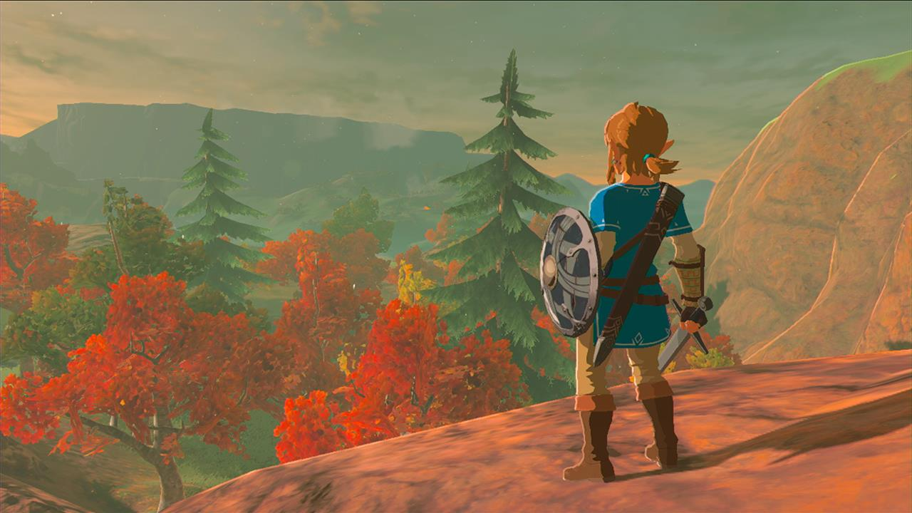

Os Melhores 5 Jogos de Aventura em Mundo Aberto
1. The Witcher 3: Wild Hunt
The Witcher 3: Wild Hunt é amplamente considerado um dos melhores jogos de mundo aberto já criados. O mundo de fantasia de Geralt de Rivia é vasto e repleto de detalhes, desde as densas florestas até as cidades movimentadas e vilas desoladas. Cada canto do mapa guarda mistérios, personagens complexos e histórias cativantes. A narrativa não-linear permite que suas escolhas influenciem o destino do mundo e das pessoas nele, o que dá uma sensação de imersão e importância raramente vista em jogos.
2. The Legend of Zelda: Breath of the Wild
The Legend of Zelda: Breath of the Wild redefiniu o que significa um jogo de mundo aberto. O mundo de Hyrule é um vasto playground de experimentação e exploração, onde as regras do jogo são consistentes e lógicas, permitindo aos jogadores resolver problemas e abordar desafios de diversas maneiras criativas. O nível de liberdade é impressionante, e a interação com o ambiente é profunda, desde escalar qualquer superfície até manipular elementos naturais. É um jogo que encoraja e recompensa a curiosidade do jogador.
3. Red Dead Redemption 2
Red Dead Redemption 2 oferece uma das experiências mais detalhadas e realistas em um jogo de mundo aberto. Ambientado no final do século XIX nos Estados Unidos, o jogo retrata um vasto e vibrante mundo de cowboys, bandidos e a expansão do oeste americano. O nível de detalhe é impressionante, desde o comportamento dos animais até as interações sociais. A narrativa é poderosa e emocional, focando na lealdade, moralidade e a inevitabilidade do progresso. O jogo equilibra perfeitamente missões guiadas e exploração livre, permitindo que os jogadores realmente vivam no mundo de Arthur Morgan.
4. Grand Theft Auto V
Grand Theft Auto V é um dos jogos mais icônicos e populares de todos os tempos, e seu mundo aberto é uma grande parte do motivo. A recriação fictícia de Los Angeles, conhecida como Los Santos, é vibrante, diversificada e repleta de atividades. Seja seguindo a história principal, realizando assaltos épicos, ou simplesmente explorando a cidade e arredores, o jogo oferece uma quantidade quase infinita de coisas para fazer. A combinação de uma narrativa envolvente com a liberdade do mundo aberto faz deste jogo uma experiência obrigatória.
5. Skyrim (The Elder Scrolls V: Skyrim)
Skyrim é um dos RPGs de mundo aberto mais influentes já lançados. O jogo oferece uma vasta terra de fantasia cheia de dragões, magia, e histórias épicas. Os jogadores têm liberdade total para criar seu próprio caminho, seja seguindo a narrativa principal ou se perdendo em centenas de missões secundárias e aventuras. O mundo é repleto de segredos, desde masmorras ocultas até encontros inesperados, e a capacidade de modificar o jogo (mods) aumenta ainda mais a longevidade e a profundidade da experiência. Skyrim continua sendo uma referência para jogos de mundo aberto, inspirando incontáveis outros títulos. Esses cinco jogos não apenas oferecem mundos vastos e detalhados para explorar, mas também colocam o jogador no centro de histórias épicas e interativas. Eles exemplificam o que há de melhor em design de mundo aberto, cada um à sua maneira, proporcionando experiências imersivas e memoráveis.